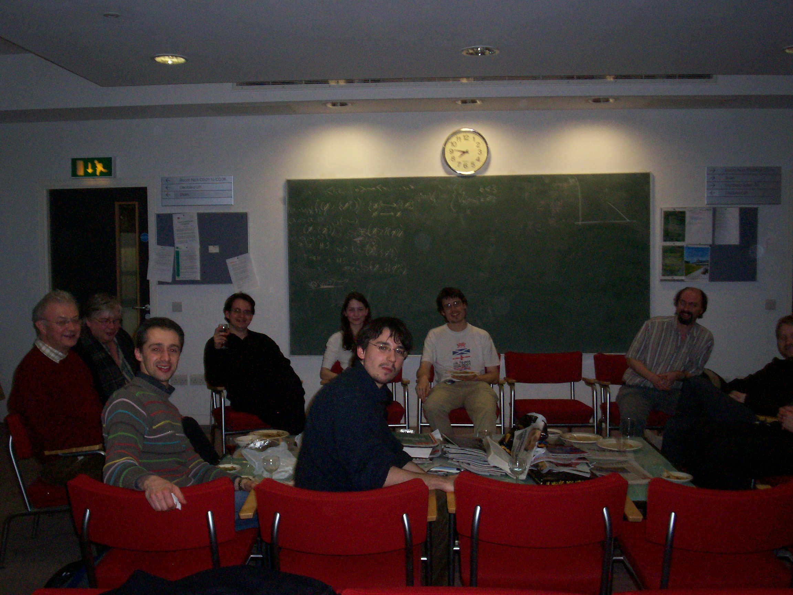
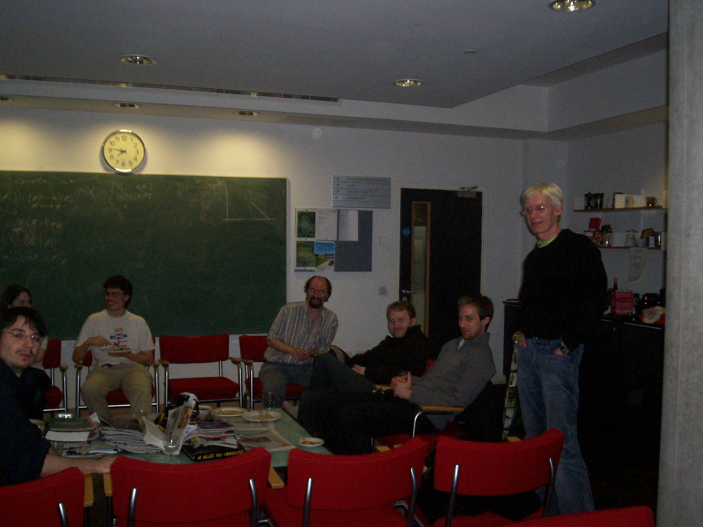

April 23rd 2008, Meeeting Room 13, Centre for Mathematical Sciences, Wilberforce Road, CB3 0WB.
Talks will be at 0900 1030 1200 then 1400 1530 1700 (approximately! Cameleon is not a branch of the armed forces!) Crabbe, Duckerts, Libert, Brown, Pettigrew, Forster, Lumsdaine and Smith will all meet for dinner on april 22nd. Other interested parties are welcome to join.
15:30
Basil Smith:
Back to the roots
Richard Pettigrew, University of Bristol
"Number systems of different lengths, and a natural approach to infinitesimal analysis"
I present
a theory of finite sets in which subset comprehension is restricted to bounded
quantifier formulae. I define the notion of a natural number system in this theory, and show that
Dedekind's Isomorphism Theorem for number systems fails. I give a brief glimpse into how badly it
fails, the ways in which it fails, and the bizarre zoology of natural number systems differing in
length and closure properties that results. Finally, I explain how one might found a natural
version of infinitesimal analysis in this theory.
I am interested in isolating decidable nonlinear
fragments of discrete number theories. Of particular interest to me is
the isolation of decidable nonlinear fragments of the true existential
theory of the rational number field, as the decidability of the full
true existential theory of the rational number field (Hilbert's 10th
Problem over Q) remains as a difficult and important problem in
arithmetic algebraic geometry.
I've recently obtained the following result: Let L be the first-order
language of fields restricted to only include WFFs formed with the
existential quantifier, disjunction, and relation symbols for
disequality and greater-than-or-equal-to in the natural way (note that
term formation has not been restricted). Then, the true L-theory of the
rational number field is decidable. Moreover, this decidability result
holds even when the structure of the rational number field is extended
by an arbitrary collection of F-definable `real-extended continuous
rational endomaps,' where F is the full first-order language of fields
and a `real-extended continuous rational endomap' is a continuous map
from R^n -> R with the property that its image over a rational vector is
always rational-valued. The proof is very simple, utilizing only
rudimentary model-theoretic and topological properties of Euclidean space.
I will present some background on Hilbert's 10th Problem over Q, present
this proof, and seek advice from attendees as to (a) whether this result
was already known (perhaps it is folklore?), and (b) promising
approaches and directions I might head into for hopefully isolating more
interesting decidable nonlinear fragments.
Peter LeFanu Lumsdaine: Carnegie-Mellon and Cambridge
Sheaves for constructive set theories
We all know how to model classical first-order logic, by taking a
model to be a set with appropriate functions and relations. If you
replace "set" by "sheaf", it still works, except that the logic of the
model may be not be classical. I will describe --- concretely,
accessibly, and with pictures --- the resulting sheaf models of
constructive logic, and present an application (due to Lubarsky): a
sheaf model in which there exists a Cauchy sequence of rationals with
no modulus of convergence.
|  |  |